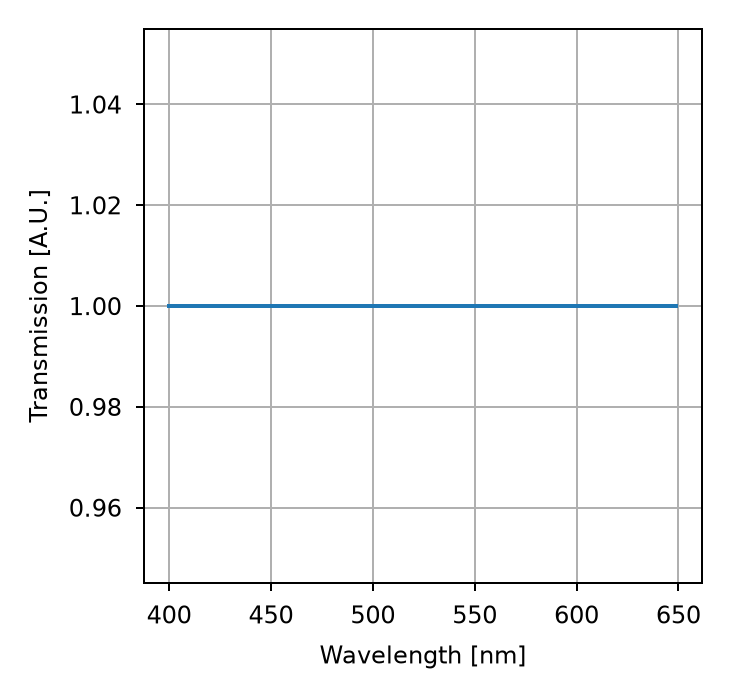
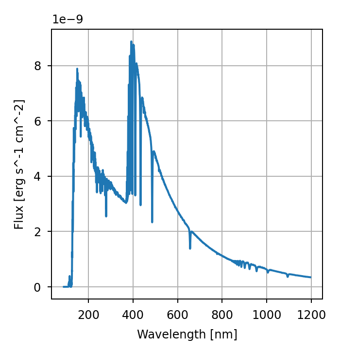
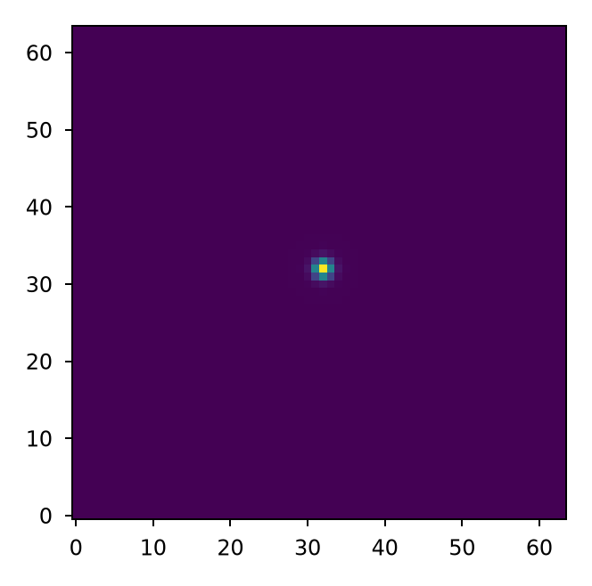

Radiometry#
Overview#
Computational radiometry is used to model the propagation of radiant energy through an optical system. It uses geometry and known optical and imaging properties to compute the irradiance from an observed scene at a detector. Lentil’s radiometry submodule provides objects and functions for working with ratiometric data.
End to end radiometric modeling is part science and part art and this guide is more geared towards describing how to use Lentil to do radiometric modeling rathern than how to do radiometric modeling. For a more in-depth treatment of the subject see:
Electro-Optical System Analysis and Design: A Radiometry Perspective, Cornelius J. Willers
The Art of Radiometry, James M. Palmer
The Spectrum object#
radiometry.Spectrum is a data structure for working with spectral
data. A spectrum is defined by the following parameters:
wave- the wavelengths represented in the spectrumvalue- the values corresponding to each wavelengthwaveunit- the wavelength unitsvalueunit- the value units
Create a new Spectrum with
import lentil
import numpy as np
import matplotlib.pyplot as plt
s = lentil.radiometry.Spectrum(wave=np.arange(400,650),
value=np.ones(250),
waveunit='nm', valueunit=None)
plt.plot(s.wave, s.value)
plt.grid()
plt.xlabel(f'Wavelength [{s.waveunit}]')
plt.ylabel('Transmission [A.U.]')

Creating Spectrum from CSV#
Spectrum objects can be created from CSV files using
radiometry.Spectrum.from_csv(). Given a CSV file formatted as
Wavelength (nm), Flux
9.00452000e+01, 1.2757340e-17
9.01354000e+01, 1.7265205e-17
9.02258000e+01, 1.8341225e-17
...
2.98786752e+05, 1.3599320e-19
2.99086286e+05, 1.3535845e-19
2.99386120e+05, 1.3385094e-19
a Spectrum object is created with
from lentil.radiometry import Spectrum
import matplotlib.pyplot as plt
vega = Spectrum.from_csv('vega.csv', waveunit='nm',
valueunit='flam', header_rows=1)
plt.plot(wave=vega.wave, value=vega.value)
plt.grid()
plt.xlabel('Wavelength [nm]')
plt.ylabel('Flux [erg s^-1 cm^-2]')

Creating Spectrum from FITS#
Although there is no built-in function, it is also possible to create a Spectrum from a FITS file using Astropy. Here, we’ll create a dictionary of Johnson-Cousins filter transmissions as Spectrum objects and then plot their transmissions:
from lentil.radiometry import Spectrum
import matplotlib.pyplot as plt
from astropy.io import fits
jc = {}
for f in ('U','B','V','R','I'):
hdul = fits.open(f'johnson_{f.lower()}.fits')
jc[f] = (Spectrum(wave=hdul[1].data['WAVELENGTH'],
value=hdul[1].data['THROUGHPUT'],
waveunit='nm', valueunit=None))
for band in jc:
plt.plot(jc[band].wave, jc[band].value, label=band)
plt.grid()
plt.legend()
plt.xlabel('Wavelength [nm]')
plt.ylabel('Transmission [A.U.]')

The exact layout of spectral data within a FITS file may vary, but this example illustrates a general approach for creating Spectrum objects from FITS data.
Units#
Spectrum objects provide support for a limited set of wavelength and flux units and allows for conversion between units.
The following wavelength units are supported:
|
Unit |
|---|---|
|
SI base unit |
|
\(10^{-6}\ \mbox{m}\) |
|
\(10^{-9}\ \mbox{m}\) |
|
\(10^{-10}\ \mbox{m}\) |
The following flux units are supported:
|
Units |
|---|---|
|
\(\mbox{photons s}^{-1} \mbox{m}^{-2}\) |
|
\(\mbox{W m}^{-2}\) |
|
\(\mbox{erg s}^{-1} \mbox{cm}^{-2}\) |
Converting between units is done with the Spectrum’s to()
method:
import lentil
import numpy as np
s = lentil.radiometry.Spectrum(wave=np.arange(400,700,50),
value=np.ones(6),
waveunit='nm', valueunit=None)
print(s.wave)
array([400, 450, 500, 550, 600, 650])
s.to('m')
s.wave
array([4.0e-07, 4.5e-07, 5.0e-07, 5.5e-07, 6.0e-07, 6.5e-07])
Manipulating Spectrum objects#
Basic operations#
The following arithmetic operations are defined for Spectrum objects:
Spectrum.add()Spectrum.subtract()Spectrum.multiply()Spectrum.divide()Spectrum.power()
A new Spectrum object is created and returned for each operation:
>>> import lentil
>>> import numpy as np
>>> # multiply a spectrum by a scalar
>>> a = lentil.radiometry.Spectrum(wave=np.arange(400,700,50),
... value=np.ones(6),
... waveunit='nm', valueunit=None)
>>> b = a * 2
>>> b.value
array([2, 2, 2, 2, 2, 2])
>>> # add two spectrum together
>>> c = lentil.radiometry.Spectrum(wave=np.arange(400,700,50),
... value=2*np.ones(6),
... waveunit='nm', valueunit=None)
>>> d = a + c
>>> d.value
array([3, 3, 3, 3, 3, 3])
Arithmetic operations work on Spectrum objects in the following ways:
a scalar with a Spectrum elementwise over all Spectrum values
a vector with a Spectrum elementwise over all Spectrum values (note the vector length must match the size of the Spectrum)
a Spectrum with another Spectrum elementwise (note that all arithmetic operations are supported for fully and partially overlapping data and addition and subtraction are supported for disjoint data)
Standard arithmetic behavior is available using the appropriate overloaded operator
(+, -, *, /, or **) with additional custom behavior defining
wavelength sampling and value interpolation options available by calling the
arithmetic method directly:
>>> import lentil
>>> import numpy as np
>>> a = lentil.radiometry.Spectrum(wave=np.arange(400,700,50),
... value=np.ones(6),
... waveunit='nm', valueunit=None)
>>> b = lentil.radiometry.Spectrum(wave=np.arange(500,700,25),
... value=2*np.ones(8),
... waveunit='nm', valueunit=None)
>>> c = a.multiply(b, sampling=100)
>>> c.value
array([3, 3, 3])
Cropping, trimming, and joining operations#
The following operations are available for manipulating Spectrum data:
Spectrum.append()- Append a Spectrum to the end of anotherSpectrum.crop()- Crop a Spectrum by wavelengthSpectrum.pad()- Pad a Spectrum with additional valuesSpectrum.trim()- Trim zeros off the ends of a Spectrum
Sampling and binning operations#
The following operations are available for adjusting the sampling of Spectrum data:
Spectrum.bin()- Compute binned data at desired central wavelengthsSpectrum.sample()- Sample a spectrum at desired wavelengthsSpectrum.resample()- Sample a spectrum at desired wavelengths (in-place)Spectrum.integrate()- Compute integrated value between specified wavelengths
Blackbody emitters#
Create a radiometry.Blackbody object with:
>>> import lentil
>>> import matplotlib.pyplot as plt
>>> import numpy as np
>>> wave = np.arange(400,4000)
>>> temp = 5000
>>> src = lentil.radiometry.Blackbody(wave,temp,waveunit='nm')
>>> plt.plot(src.wave, src.value), plt.grid()
>>> plt.xlabel('Wavelength [nm]'), plt.ylabel('Flux [photons/sec/m^2/sr]')
Because Blackbody subclasses Spectrum, all of the Spectrum methods are available:
>>> src.to('wlam')
>>> plt.plot(src.wave, src.value), plt.grid()
>>> plt.xlabel('Wavelength [nm]'), plt.ylabel('Flux [W/m^2/sr]')

Path transmission and emission#
The radiometry.Material object is useful for representing an optic with a
specific transmission (or reflectance), emission, and contamination level. Several
materials can be combined together in a list to compute path transmission or emission
using the radiometry.path_transmission() and radiometry.path_emission()
functions: